#import libraries
import matplotlib.pyplot as plt
import numpy as np
import pandas as pd
import seaborn as sns
import warnings
warnings.filterwarnings("ignore")Exploratory Data Analysis
### Load data
data = pd.read_csv('ACLR_data.csv')
data.head()| record_id | redcap_event_name | sex_dashboard | graft_dashboard2 | med_meniscus | lat_meniscus | lat_stab | physis | visit_sex | visit_graft | ... | lsi_flex_mvic_60 | acl_ext_isok_60 | con_ext_isok_60 | lsi_ext_isok_60 | acl_flex_isok_60 | con_flex_isok_60 | lsi_flex_isok_60 | strength_testing_complete | rts | rts_tss | |
|---|---|---|---|---|---|---|---|---|---|---|---|---|---|---|---|---|---|---|---|---|---|
| 0 | 1 | visit_1_arm_1 | NaN | NaN | NaN | NaN | NaN | NaN | Male | Other | ... | NaN | 2.57 | 2.92 | 87.86 | 1.50 | 1.45 | 103.32 | 2.0 | NaN | NaN |
| 1 | 2 | visit_1_arm_1 | NaN | NaN | NaN | NaN | NaN | NaN | Female | HS autograft | ... | NaN | 0.97 | 2.16 | 45.00 | 0.88 | 1.20 | 72.98 | 2.0 | NaN | NaN |
| 2 | 2 | visit_2_arm_1 | NaN | NaN | NaN | NaN | NaN | NaN | Female | HS autograft | ... | NaN | NaN | NaN | NaN | NaN | NaN | NaN | 0.0 | NaN | NaN |
| 3 | 2 | visit_3_arm_1 | NaN | NaN | NaN | NaN | NaN | NaN | Female | HS autograft | ... | NaN | NaN | NaN | NaN | NaN | NaN | NaN | 0.0 | NaN | NaN |
| 4 | 3 | visit_1_arm_1 | NaN | NaN | NaN | NaN | NaN | NaN | Female | HS autograft | ... | NaN | 1.53 | 1.88 | 81.53 | 0.93 | 1.15 | 81.11 | 2.0 | NaN | NaN |
5 rows × 60 columns
| record_id | redcap_event_name | sex_dashboard | graft_dashboard2 | med_meniscus | lat_meniscus | lat_stab | physis | visit_sex | visit_graft | … | lsi_flex_mvic_60 | acl_ext_isok_60 | con_ext_isok_60 | lsi_ext_isok_60 | acl_flex_isok_60 | con_flex_isok_60 | lsi_flex_isok_60 | strength_testing_complete | rts | rts_tss | |
|---|---|---|---|---|---|---|---|---|---|---|---|---|---|---|---|---|---|---|---|---|---|
| 0 | 1 | visit_1_arm_1 | NaN | NaN | NaN | NaN | NaN | NaN | Male | Other | … | NaN | 2.57 | 2.92 | 87.86 | 1.50 | 1.45 | 103.32 | 2.0 | NaN | NaN |
| 1 | 2 | visit_1_arm_1 | NaN | NaN | NaN | NaN | NaN | NaN | Female | HS autograft | … | NaN | 0.97 | 2.16 | 45.00 | 0.88 | 1.20 | 72.98 | 2.0 | NaN | NaN |
| 2 | 2 | visit_2_arm_1 | NaN | NaN | NaN | NaN | NaN | NaN | Female | HS autograft | … | NaN | NaN | NaN | NaN | NaN | NaN | NaN | 0.0 | NaN | NaN |
| 3 | 2 | visit_3_arm_1 | NaN | NaN | NaN | NaN | NaN | NaN | Female | HS autograft | … | NaN | NaN | NaN | NaN | NaN | NaN | NaN | 0.0 | NaN | NaN |
| 4 | 3 | visit_1_arm_1 | NaN | NaN | NaN | NaN | NaN | NaN | Female | HS autograft | … | NaN | 1.53 | 1.88 | 81.53 | 0.93 | 1.15 | 81.11 | 2.0 | NaN | NaN |
5 rows × 60 columns
#Age Histogram after dropping individuals over the age of 25
plt.hist(data['age'], bins = 15)
plt.xlabel('Age')
plt.ylabel('Count')
plt.title('Age of Individuals Distribution')
plt.gca().spines['top'].set_visible(False)
plt.gca().spines['right'].set_visible(False)
plt.gca().spines['left'].set_visible(False)
plt.tick_params(axis='y', which='both',length=0)
# Saving the graph
plt.show()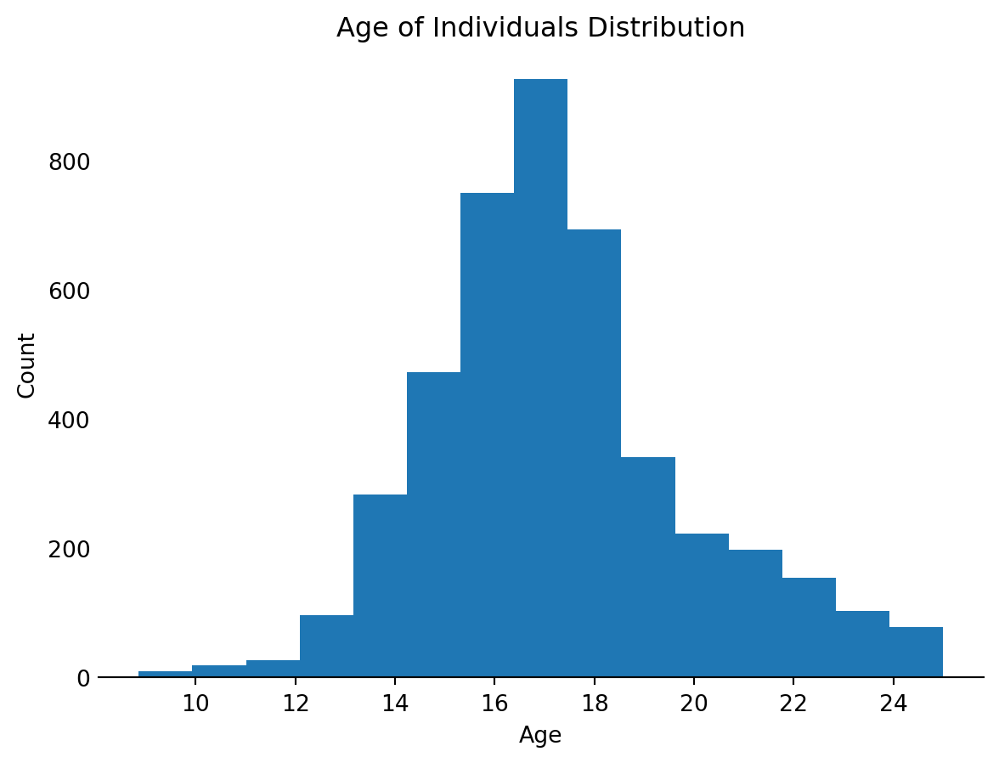
#Histogram of ACL RSI for Patients
plt.hist(data['acl_rsi'], bins = 10)
plt.xlabel('ACL RSI')
plt.ylabel('Count')
plt.title('ACL RSI Distribution for Patients')
plt.gca().spines['top'].set_visible(False)
plt.gca().spines['right'].set_visible(False)
plt.gca().spines['left'].set_visible(False)
plt.tick_params(axis='y', which='both',length=0)
# Saving the graph
plt.show()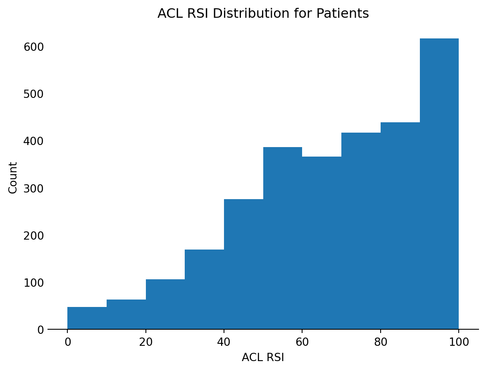
plt.scatter(data['age'], data['ikdc'])
plt.xlabel('Age')
plt.ylabel('IKDC')
plt.title('Is IKDC Correlated to the Age of the Patient?')
plt.gca().spines['top'].set_visible(False)
plt.gca().spines['right'].set_visible(False)
plt.gca().spines['left'].set_visible(False)
plt.tick_params(axis='y', which='both',length=0)
# Saving the graph
plt.show()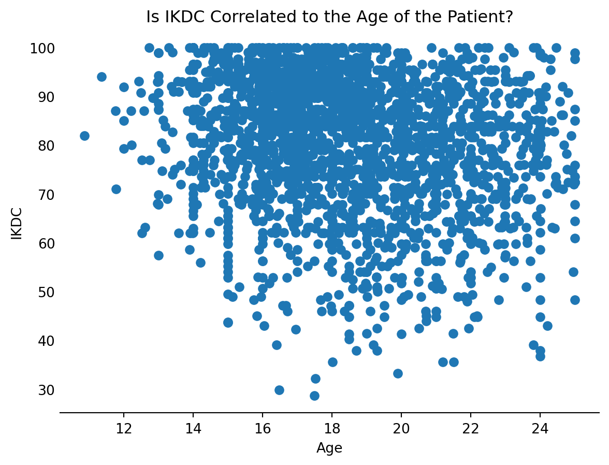
#Calculating correlation coefficient between age and ikdc
correlation_coefficient = data[['age', 'ikdc']].corr().iloc[0,1]
print(correlation_coefficient)
#Not close to negative 1, indicating there is not a strong correlation.-0.17753340913066276-0.17753340913066273plt.scatter(data['age'], data['acl_rsi'])
plt.xlabel('Age')
plt.ylabel('ACL RSI')
plt.title('Is ACL RSI Correlated to the Age of the Patient?')
plt.gca().spines['top'].set_visible(False)
plt.gca().spines['right'].set_visible(False)
plt.gca().spines['left'].set_visible(False)
plt.tick_params(axis='y', which='both',length=0)
# Saving the graph
plt.show()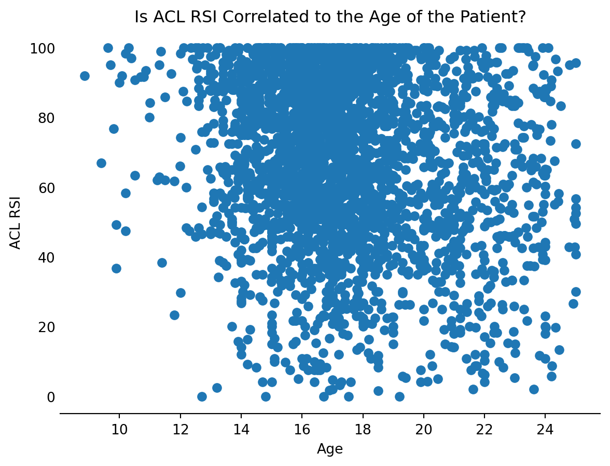
correlation_coefficient2 = data[['age', 'acl_rsi']].corr().iloc[0,1]
print(correlation_coefficient2)
#Correlation is still not super strong-0.1664060653262176-0.16640606532621763plt.hist(data['tss_dashboard'], bins = 4)
plt.xlabel('Time Since Surgery Group')
plt.ylabel('Count')
plt.title('Time Since Surgery Distribution')
plt.gca().spines['top'].set_visible(False)
plt.gca().spines['right'].set_visible(False)
plt.gca().spines['left'].set_visible(False)
plt.xticks([0, 1, 2, 3], ['0-3 months', '4-6 months', '7-12 months', '1+ years'])
plt.tick_params(axis='y', which='both',length=0)
# Saving the graph
plt.show()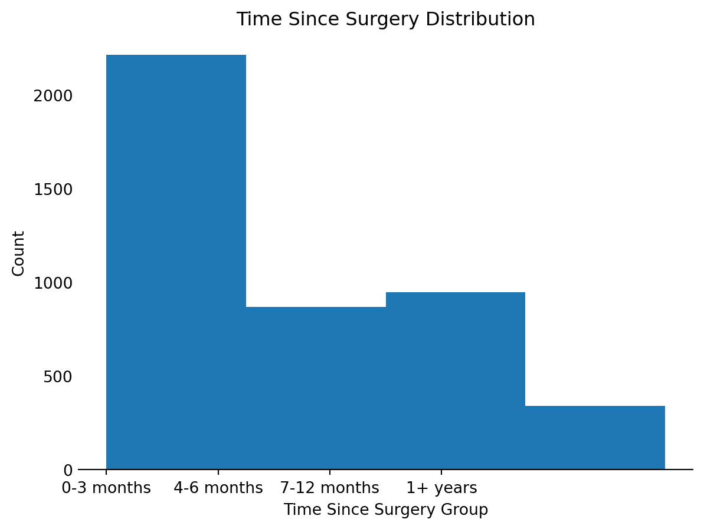
plt.hist(data['lsi_ext_isok_60'])
plt.xlabel('LSI For Isokinetic Knee Extension')
plt.ylabel('Count')
plt.title('LSI for Isokinetic Knee Extension Distribution')
plt.gca().spines['top'].set_visible(False)
plt.gca().spines['right'].set_visible(False)
plt.gca().spines['left'].set_visible(False)
plt.tick_params(axis='y', which='both',length=0)
# Saving the graph
plt.show()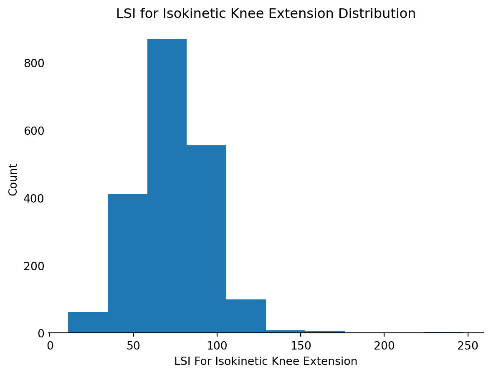
lsi_ext_isok_60_mean = np.mean(data['lsi_ext_isok_60'])
print(lsi_ext_isok_60_mean, '%')73.83709135616758 %73.83709135616758 %#Peak Torque recorded and normalized to body mass
plt.hist(data['acl_flex_isok_60'])
plt.xlabel('ACLR Isokinetic Flexion Torque')
plt.ylabel('Count')
plt.title('ACLR Isokinetic Flexion Torque Distribution')
plt.gca().spines['top'].set_visible(False)
plt.gca().spines['right'].set_visible(False)
plt.gca().spines['left'].set_visible(False)
plt.tick_params(axis='y', which='both',length=0)
# Saving the graph
plt.show()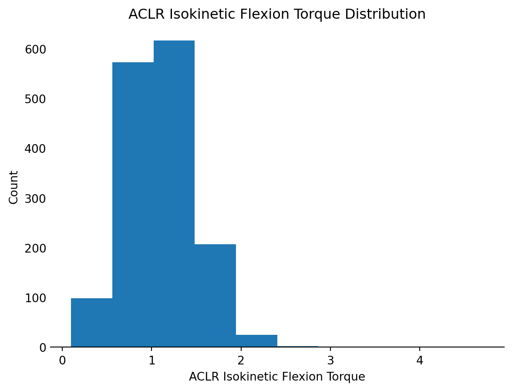
plt.scatter(data['bmi'], data['sh_lsi'])
plt.xlabel('BMI')
plt.ylabel('Single Hop LSI')
plt.title('Correlation between Single Hop LSI and BMI')
plt.gca().spines['top'].set_visible(False)
plt.gca().spines['right'].set_visible(False)
plt.gca().spines['left'].set_visible(False)
plt.tick_params(axis='y', which='both',length=0)
# Saving the graph
plt.show()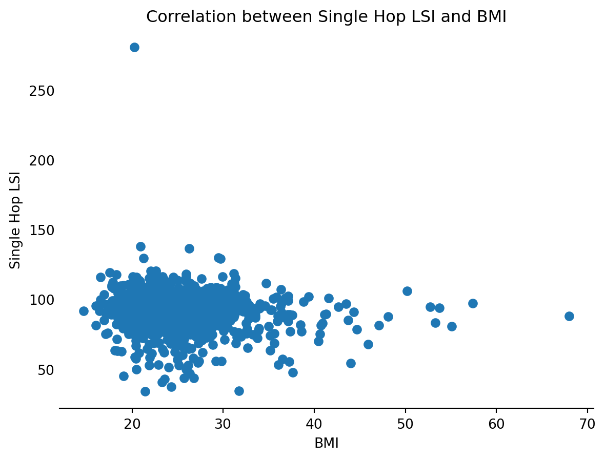
# Histogram of Single Hop LSI
plt.hist(data['sh_lsi'])
plt.xlabel('Single Hop LSI')
plt.ylabel('Count')
plt.title('Single Hop LSI Distribution')
plt.gca().spines['top'].set_visible(False)
plt.gca().spines['right'].set_visible(False)
plt.gca().spines['left'].set_visible(False)
plt.tick_params(axis='y', which='both',length=0)
plt.xlim(20, 150)
plt.show()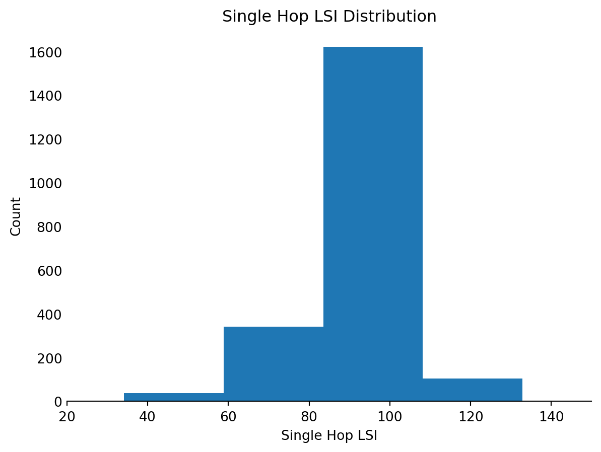
# Histogram of Triple Hop LSI
plt.hist(data['th_lsi'])
plt.xlabel('Triple Hop LSI')
plt.ylabel('Count')
plt.title('Triple Hop LSI Distribution')
plt.gca().spines['top'].set_visible(False)
plt.gca().spines['right'].set_visible(False)
plt.gca().spines['left'].set_visible(False)
plt.xlim(20, 150)
plt.tick_params(axis='y', which='both',length=0)
plt.show()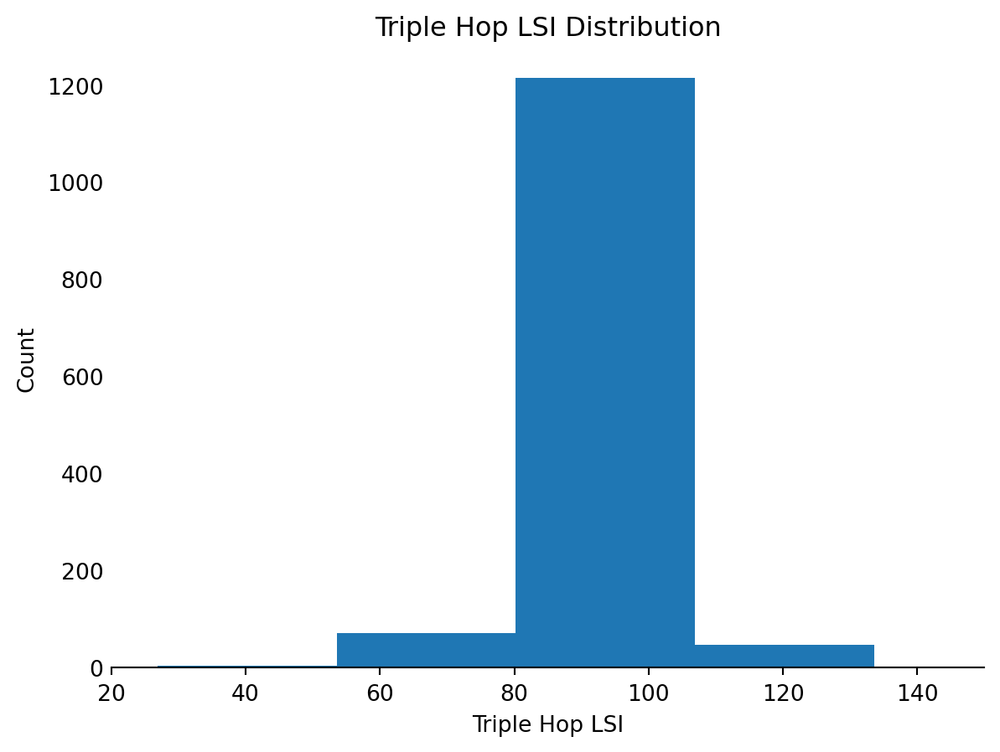
green_mask = data['sh_lsi'] > 85
plt.scatter(data['tss_dashboard'][~green_mask], data['sh_lsi'][~green_mask], color='blue', label='sh_lsi <= 85')
plt.scatter(data['tss_dashboard'][green_mask], data['sh_lsi'][green_mask], color='green', label='sh_lsi > 85')
plt.xlabel('Time Since Surgery Groups')
plt.ylabel('Single Hop LSI')
plt.title('Any Correlation between Single Hop LSI and Time Since Surgery?')
plt.gca().spines['top'].set_visible(False)
plt.gca().spines['right'].set_visible(False)
plt.gca().spines['left'].set_visible(False)
plt.tick_params(axis='y', which='both', length=0)
plt.legend(loc='upper left', bbox_to_anchor=(1, 1), title='LSI Conditions')
# Saving the graph
plt.show()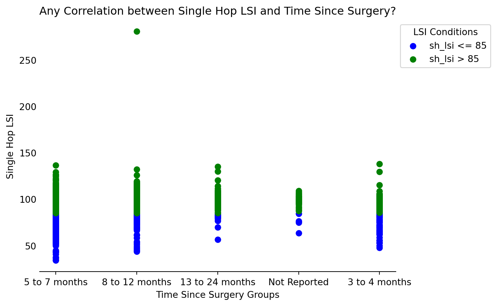
Patients are usually cleared for return to sports after an ACL surgery from 5-12 months. Lets look at their mental readiness (acl_rsi) at these times:
group_5_7_months = data[data['tss_dashboard'] == '5 to 7 months']
group_8_12_months = data[data['tss_dashboard'] == '8 to 12 months']
plt.figure(figsize=(10, 6))
sns.kdeplot(group_5_7_months['acl_rsi'], label='5 to 7 months', fill=True, color='blue')
sns.kdeplot(group_8_12_months['acl_rsi'], label='8 to 12 months', fill=True, color='green')
plt.xlabel('ACL RSI')
plt.ylabel('Density')
plt.title('Distribution of ACL RSI Scores for Groups 5 to 7 Months and 8 to 12 Months')
plt.gca().spines['top'].set_visible(False)
plt.gca().spines['right'].set_visible(False)
plt.gca().spines['left'].set_visible(False)
plt.tick_params(axis='y', which='both', length=0)
plt.legend(loc='upper left', bbox_to_anchor=(1, 1), title='Time Since Surgery')
# Saving the graph
plt.show()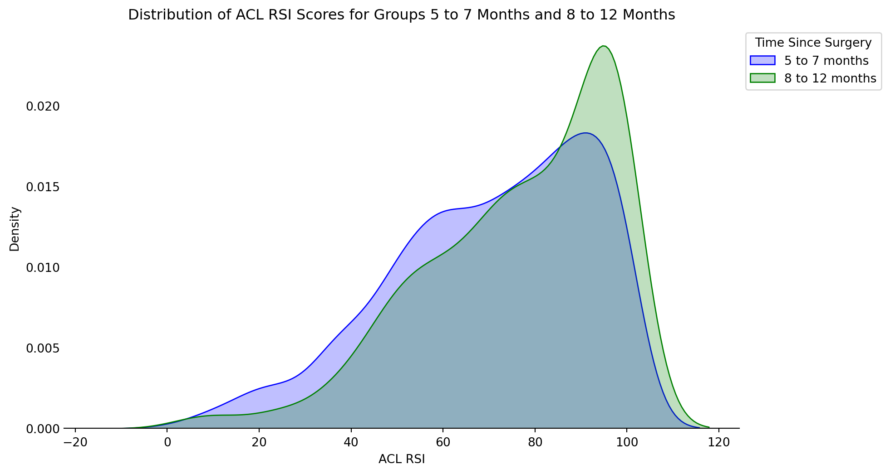
counts = data['visit_graft'].value_counts()
plt.bar(counts.index, counts.values)
plt.xlabel('Graft Type at Visit')
plt.ylabel('Count')
plt.title('Type of Graft Distribution')
ax = plt.gca()
ax.spines['top'].set_visible(False)
ax.spines['right'].set_visible(False)
ax.spines['left'].set_visible(False)
plt.tick_params(axis='y', which='both', length=0)
plt.xticks(rotation=45, ha='right')
# Saving the graph
plt.tight_layout()
plt.show()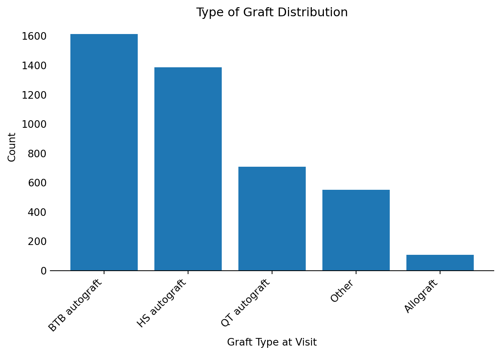
BTB and HS autograft appears to be the most common graph types used. We want to examine them further:
btb_data = data[data['visit_graft'] == 'BTB autograft']
hs_data = data[data['visit_graft'] == 'HS autograft']
plt.figure(figsize=(10, 6))
sns.kdeplot(btb_data['acl_rsi'], label='BTB Graft', fill=True, color='blue', alpha=0.6)
sns.kdeplot(hs_data['acl_rsi'], label='HS Graft', fill=True, color='green', alpha=0.6)
plt.xlabel('ACL RSI')
plt.ylabel('Density')
plt.title('Distribution of ACL RSI for BTB Graft vs HS Graft')
plt.gca().spines['top'].set_visible(False)
plt.gca().spines['right'].set_visible(False)
plt.gca().spines['left'].set_visible(False)
plt.tick_params(axis='y', which='both',length=0)
plt.legend()
# Saving the graph
plt.show()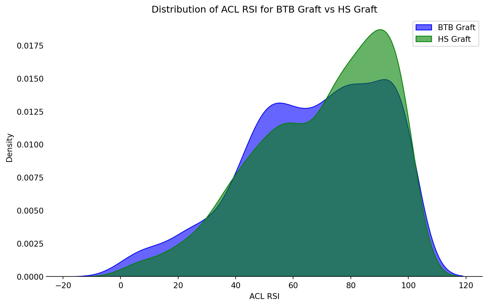
# Looking further at the means of ACL RSI for BTB and HS grafts
mean_btb = np.mean(btb_data['acl_rsi'])
mean_hs = np.mean(hs_data['acl_rsi'])
print('Mean ACL RSI for BTB: ', mean_btb, '\nMean ACL RSI for HS: ', mean_hs)Mean ACL RSI for BTB: 66.71625423728814
Mean ACL RSI for HS: 69.58213018867924Mean ACL RSI for BTB: 66.71625423728814
Mean ACL RSI for HS: 69.58213018867924plt.hist(data['redcap_event_name'], bins = 5)
plt.xlabel('Event Name')
plt.ylabel('Count')
plt.title('Event Distribution')
plt.gca().spines['top'].set_visible(False)
plt.gca().spines['right'].set_visible(False)
plt.gca().spines['left'].set_visible(False)
plt.xticks(rotation=45, ha='right')
plt.tick_params(axis='y', which='both',length=0)
# Saving the graph
plt.show()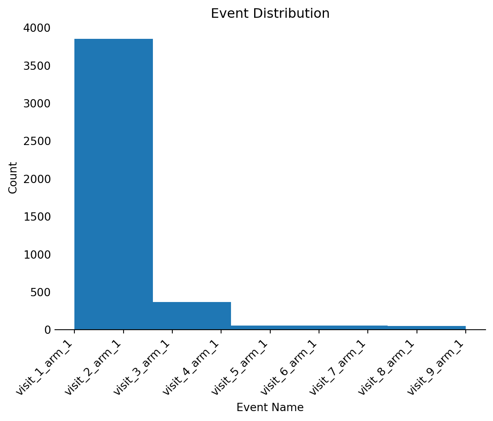
Most of the patients only have data for their first 1-2 visits.
helpful_data_clean = data.dropna(subset=['acl_rsi'])
plt.figure(figsize=(12, 8))
sns.kdeplot(data=helpful_data_clean, x='acl_rsi', hue='redcap_event_name', fill=True, common_norm=False, warn_singular=False)
plt.xlabel('ACL RSI')
plt.ylabel('Density')
plt.title('ACL RSI Distribution at Each Visit')
plt.gca().spines['top'].set_visible(False)
plt.gca().spines['right'].set_visible(False)
plt.gca().spines['left'].set_visible(False)
plt.tick_params(axis='y', which='both', length=0)
# Saving the graph
plt.show()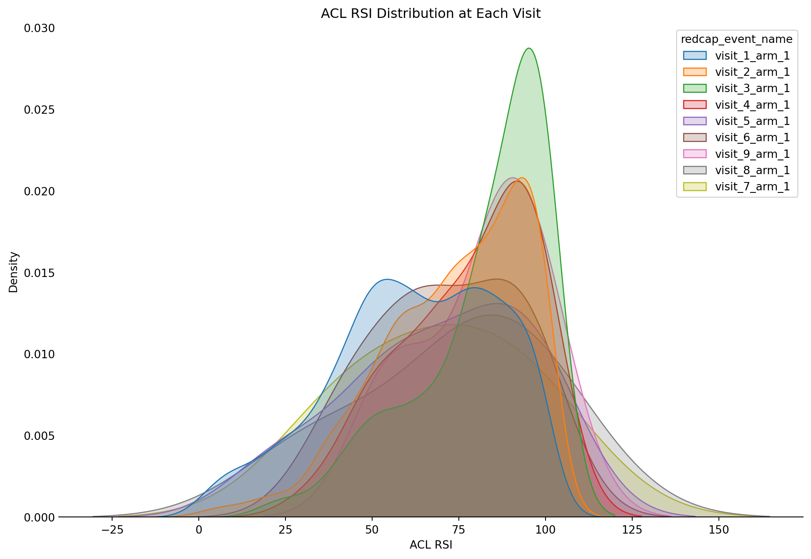
Looking at patients return ACL_RSI at different times since their surgery.
average_acl_rsi_per_visit = data.groupby('tss_dashboard')['acl_rsi'].mean()
print('Mean ACL RSI at Visit:', average_acl_rsi_per_visit)
iqr_per_time = {}
for time in average_acl_rsi_per_visit.index:
time_data = data[data['tss_dashboard'] == time]['acl_rsi'].dropna()
q1 = time_data.quantile(0.25)
q3 = time_data.quantile(0.75)
iqr_per_time[time] = q3 - q1
print("IQR for each time period:", iqr_per_time)
q1_acl_rsi = data['acl_rsi'].quantile(0.25)
q3_acl_rsi = data['acl_rsi'].quantile(0.75)
iqr_acl_rsi = q3_acl_rsi - q1_acl_rsi
print(f"IQR for ACL RSI: {iqr_acl_rsi}")Mean ACL RSI at Visit: tss_dashboard
13 to 24 months 67.849391
3 to 4 months 57.920182
5 to 7 months 70.263743
8 to 12 months 76.423492
Not Reported 60.345864
Preoperative NaN
Name: acl_rsi, dtype: float64
IQR for each time period: {'13 to 24 months': 37.285, '3 to 4 months': 35.0, '5 to 7 months': 33.3, '8 to 12 months': 31.975, 'Not Reported': 37.7225, 'Preoperative': nan}
IQR for ACL RSI: 36.67Mean ACL RSI at Visit: tss_dashboard
13 to 24 months 67.849391
3 to 4 months 57.920182
5 to 7 months 70.263743
8 to 12 months 76.423492
Not Reported 60.345864
Preoperative NaN
Name: acl_rsi, dtype: float64
IQR for each time period: {'13 to 24 months': 37.285, '3 to 4 months': 35.0, '5 to 7 months': 33.3, '8 to 12 months': 31.975, 'Not Reported': 37.7225, 'Preoperative': nan}
IQR for ACL RSI: 36.67Looking at the correlation matrix of some variables we plan to use in our report:
important_data = data[['age', 'acl_rsi', 'koos_pain', 'lsi_ext_isok_60', 'lsi_flex_isok_60', 'lsi_ext_mvic_60', 'lsi_flex_mvic_60', 'sh_lsi', 'th_lsi']]
correlation_matrix = important_data.corr()
sns.heatmap(correlation_matrix, annot=True, cmap='coolwarm', fmt='.2f', cbar=True, square=True, linewidths=0.5, linecolor='black')
plt.figure(figsize=(12, 8))
plt.show()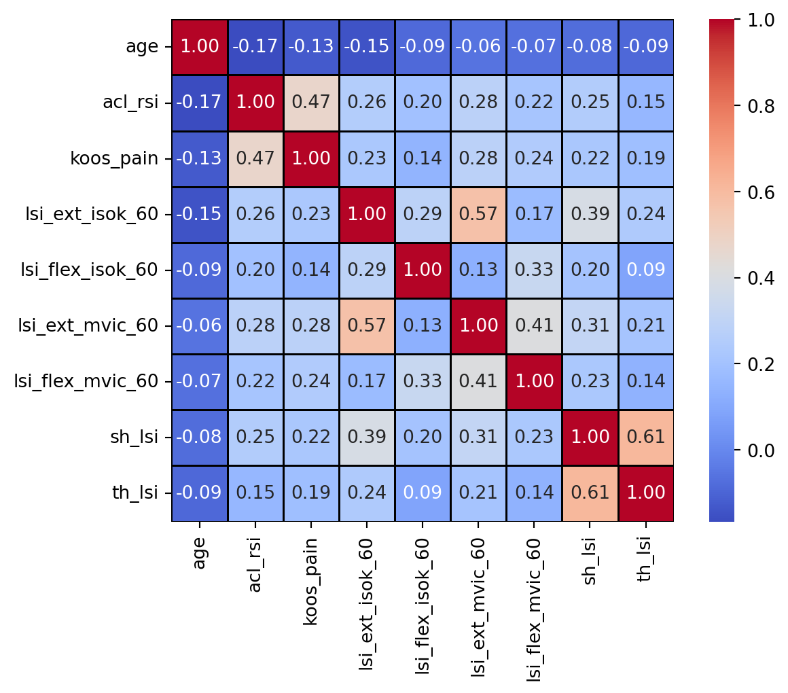
<Figure size 1152x768 with 0 Axes># Looking at descriptive statistics for some of the variables we used in our report
pd.DataFrame(important_data.describe())| age | acl_rsi | koos_pain | lsi_ext_isok_60 | lsi_flex_isok_60 | lsi_ext_mvic_60 | lsi_flex_mvic_60 | sh_lsi | th_lsi | |
|---|---|---|---|---|---|---|---|---|---|
| count | 4371.000000 | 2886.000000 | 2143.000000 | 2017.000000 | 2012.000000 | 996.000000 | 986.00 | 2107.000000 | 1343.000000 |
| mean | 17.306231 | 67.352110 | 91.402277 | 73.837091 | 90.162087 | 77.873584 | inf | 92.673478 | 94.635314 |
| std | 2.633281 | 23.539202 | 9.606058 | 22.203231 | 18.787932 | 26.995961 | NaN | 12.619013 | 11.593727 |
| min | 8.855556 | 0.000000 | 8.900000 | 10.967185 | 22.550000 | 13.390000 | 25.32 | 34.170000 | 0.220000 |
| 25% | 15.680556 | 50.830000 | 86.110000 | 59.035326 | 79.630000 | 61.100000 | 67.60 | 87.133465 | 90.655000 |
| 50% | 17.000000 | 70.300000 | 94.400000 | 74.380000 | 90.383888 | 77.930000 | 80.41 | 94.630000 | 95.900000 |
| 75% | 18.561944 | 87.500000 | 97.200000 | 86.760000 | 100.660837 | 93.292500 | 93.47 | 99.490000 | 100.000000 |
| max | 25.000000 | 100.000000 | 100.000000 | 247.370000 | 311.110000 | 236.510000 | inf | 280.864197 | 266.875000 |
| age | acl_rsi | koos_pain | lsi_ext_isok_60 | lsi_flex_isok_60 | lsi_ext_mvic_60 | lsi_flex_mvic_60 | sh_lsi | th_lsi | |
|---|---|---|---|---|---|---|---|---|---|
| count | 4371.000000 | 2886.000000 | 2143.000000 | 2017.000000 | 2012.000000 | 996.000000 | 986.00 | 2107.000000 | 1343.000000 |
| mean | 17.306231 | 67.352110 | 91.402277 | 73.837091 | 90.162087 | 77.873584 | inf | 92.673478 | 94.635314 |
| std | 2.633281 | 23.539202 | 9.606058 | 22.203231 | 18.787932 | 26.995961 | NaN | 12.619013 | 11.593727 |
| min | 8.855556 | 0.000000 | 8.900000 | 10.967185 | 22.550000 | 13.390000 | 25.32 | 34.170000 | 0.220000 |
| 25% | 15.680556 | 50.830000 | 86.110000 | 59.035326 | 79.630000 | 61.100000 | 67.60 | 87.133465 | 90.655000 |
| 50% | 17.000000 | 70.300000 | 94.400000 | 74.380000 | 90.383888 | 77.930000 | 80.41 | 94.630000 | 95.900000 |
| 75% | 18.561944 | 87.500000 | 97.200000 | 86.760000 | 100.660837 | 93.292500 | 93.47 | 99.490000 | 100.000000 |
| max | 25.000000 | 100.000000 | 100.000000 | 247.370000 | 311.110000 | 236.510000 | inf | 280.864197 | 266.875000 |
Examining the correlation between ACLRSI and KOOS pain as they are both measures of mental readiness.
# Looking at correlation between ACL RSI and KOOS Pain
plt.rcParams['font.family'] = 'Georgia'
sns.lmplot(x='acl_rsi', y='koos_pain', data=data, line_kws={'color': 'red'})
plt.title("Relationship between ACL_RSI \n and KOOS Pain")
plt.xlabel('ACL RSI')
plt.ylabel('KOOS Pain')
plt.gca().spines['top'].set_visible(False)
plt.gca().spines['right'].set_visible(False)
plt.tick_params(axis='y', which='both',length=0)
plt.tick_params(axis='x', which='both',length=0)
plt.show()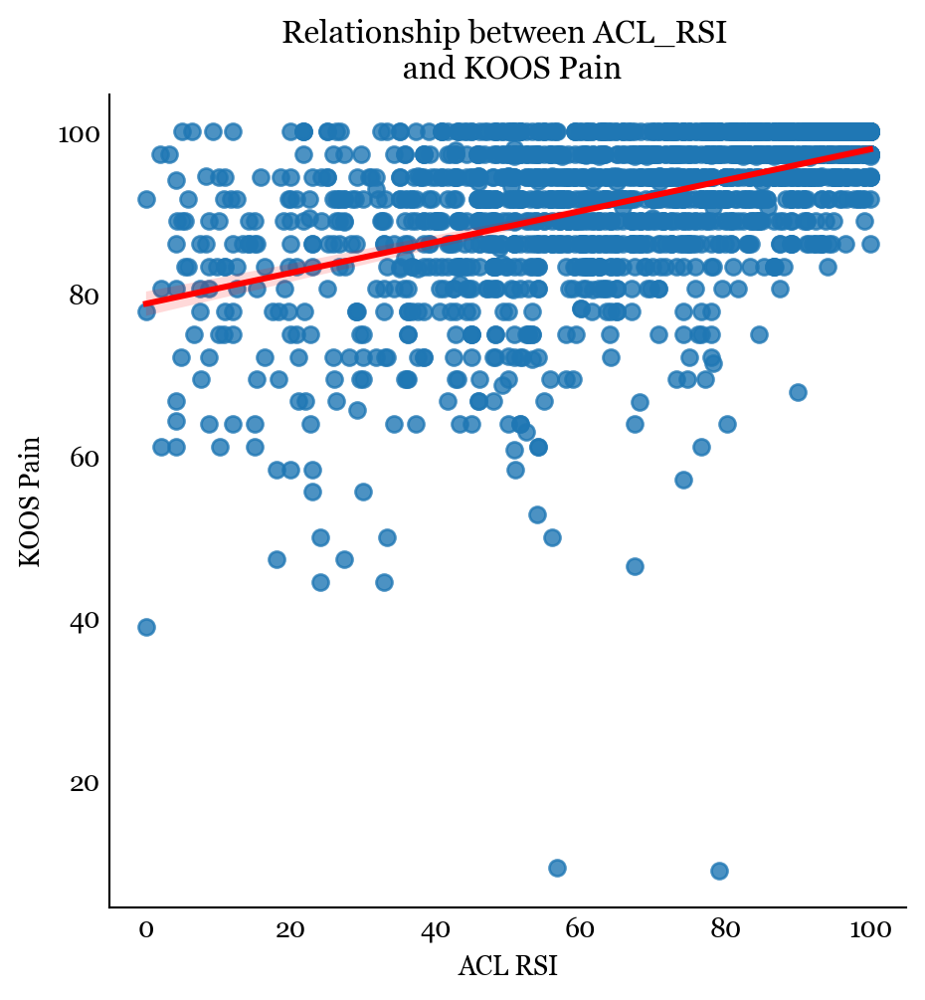
We looked at the variables above to explore any relationships that could be helpful in assessing patients recovery. The findings in this exploration led us to pivot our question to focus on re-designing the report to help patients understand the data regarding their injury.